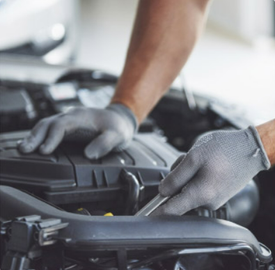
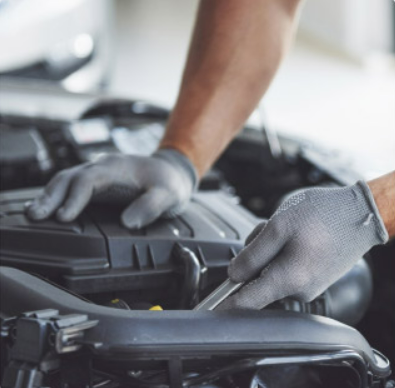

.jpg)
.jpg) 

Somos un taller automotriz especializado en mecánica en general, mecatrónica y electromecánica. Ubicados en San Ramón de Alajuela, Calle Orozco, 100 metros sur y 75 metros oeste de la Beneficio Café de Altura, donde se realizan reparaciones, mantenimiento y diagnósticos para establecer y conservar las condiciones de operación eficientes y seguras para el funcionamiento del vehículo automóvil o de sus equipos y componentes, con altos estándares de calidad y la utilización de tecnología de punta (equipos electrónicos, scanner, herramientas especializadas). Atendemos multimarca y todos los modelos de vehiculos ofreciendo servicios en mecanica en general,suspensión, sistema de frenos, sistema hidráulico, sistema eléctrico, diagnosticos computarizados, cambio de aceite, overhaul(reparación completa de motor), sistema de enfriamiento del motor,mantenimiento en general.
Nos respalda más de 11 años con experiencia en Servicio Automotriz Multimarca
Establecimiento fundado el lunes 6 de enero del año 2021 por Jhonnier Molina Paniagua especializado en mecánica en general, mecatrónica y electromecánica.